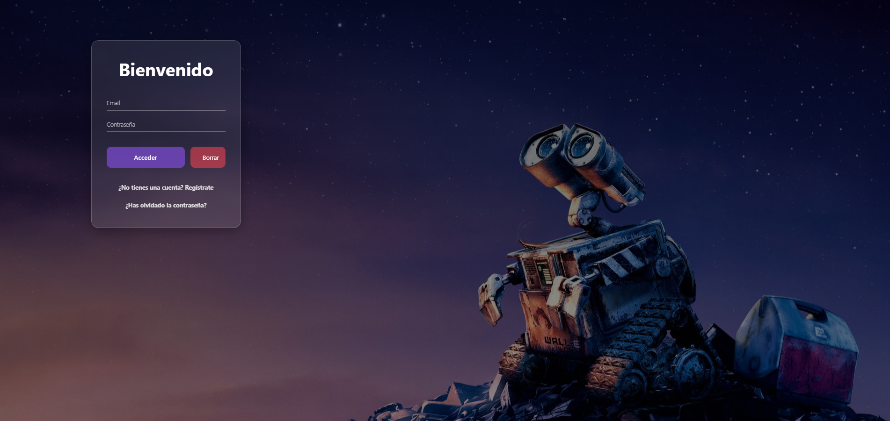

Soy Daniel (@daniielynz), un Desarrollador Web y Programador Full Stack.
Mi experiencia se centra en construir soluciones digitales completas: desde el diseño y la interactividad con HTML, CSS y JavaScript en el frontend, hasta la lógica de negocio y las bases de datos en el backend.
Mi principal objetivo es entregar código limpio, arquitectura eficiente y resultados funcionales. Me apasiona llevar un proyecto del concepto inicial a un producto final optimizado y con un excelente rendimiento.
Estoy disponible para nuevas oportunidades Full Stack. Puedes consultar mi CV y mis proyectos más recientes a continuación.

Web de Videoclub que funciona como una simulación de plataforma de gestión y compra de películas. Este es un proyecto Full Stack que tiene a Java como su lenguaje principal.
Implementamos la arquitectura Modelo-Vista-Controlador (MVC): utilizamos Servlets para la lógica de negocio en el Back-end, y JSP, JavaScript, CSS y Bootstrap para la interfaz en el Front-end y conseguir un diseño funcional. El acceso a los datos se realiza mediante clases que usan código SQL directo para gestionar la conexión con la base de datos MySQL.
Colaborador: Iker Pérez-Cárcamo Corral

Plataforma de Subastas online, diseñada para la gestión de pujas y artículos. Este es un proyecto Full Stack que tiene a PHP como su lenguaje principal.
Implementé la arquitectura Modelo-Vista-Controlador (MVC): el Back-end se basa en PHP, utilizando código SQL directo para gestionar las consultas y transacciones en la base de datos MySQL. El Front-end se construyó con HTML y CSS.
Como elemento innovador, he integrado un chatbot de asistencia utilizando JavaScript, la plataforma de automatización n8n y el modelo de lenguaje Llama3, añadiendo una capa de inteligencia artificial al servicio.
FutbolApp es una aplicación móvil nativa que ofrece información detallada sobre los equipos de la primera y segunda división española de la temporada 23/24.
La aplicación fue construida en Android Studio. Utilizamos Java para la lógica de negocio y la gestión de datos (el Back-end dentro del dispositivo), y XML para la interfaz de usuario (el Front-end). La persistencia de la información de los equipos se maneja eficientemente mediante consultas SQL.
Colaborador: Iker Pérez-Cárcamo Corral
Web de Videoclub que funciona como una simulación de plataforma de gestión y compra de películas. Este es un proyecto Full Stack que tiene a Java como su lenguaje principal.
Implementamos la arquitectura Modelo-Vista-Controlador (MVC): utilizamos Servlets para la lógica de negocio en el Back-end, y JSP, JavaScript, CSS y Bootstrap para la interfaz en el Front-end y conseguir un diseño funcional. El acceso a los datos se realiza mediante clases que usan código SQL directo para gestionar la conexión con la base de datos MySQL.
Colaboradores: Iker Pérez-Cárcamo Corral y Adrian LLarena Herranz